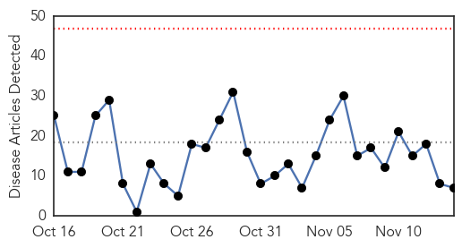
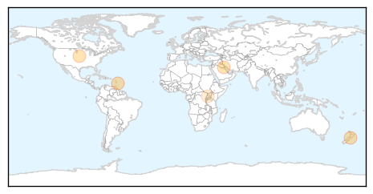
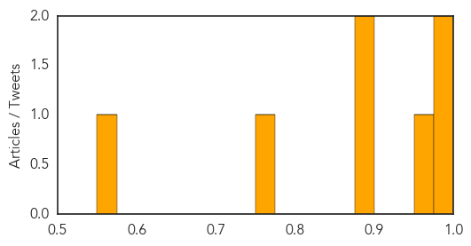
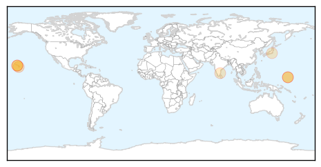
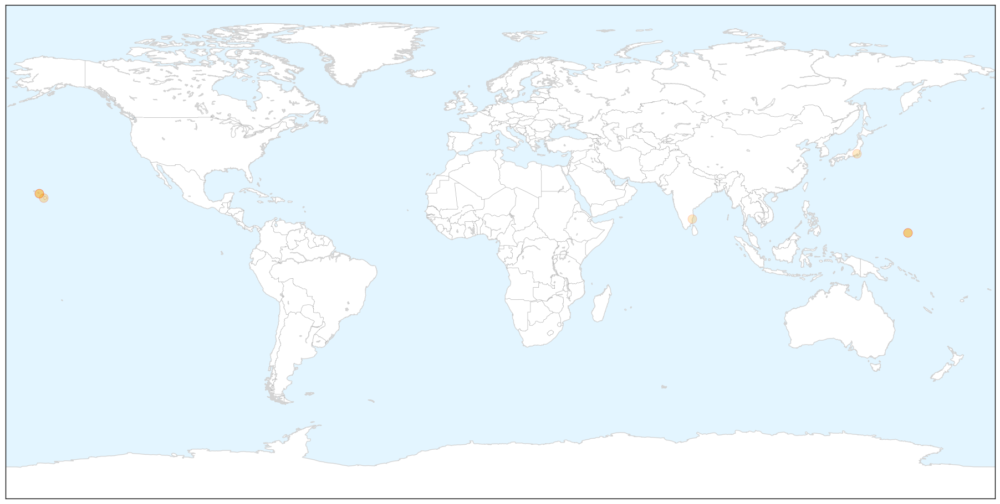

Influenza
30-Day Web Trend
0 alerts, 0 warnings

30-Day Twitter Trend
6 alerts, 0 warnings

Article Locations
Article Confidences
Top Articles:
- 0.989
- Influenza A H1N1 Virus Not Bird Flu
- 0.978
- Flu Clinics for Rockland Residents
- 0.964
- Wellington-Halton Hills MPP takes shot in the arm against flu
- 0.899
- Defense Ministry intends to cut overseas treatment cases
- 0.887
- 5 myths about the common cold: Guest commentary
- 0.755
- 2015 flu shot numbers down considerably in the Cypress Health Region
- 0.559
- Over 200 children get treatment
Top Tweets:
-
No tweets found for Nov 14, 2015
Dengue Fever
30-Day Web Trend
0 alerts, 0 warnings

30-Day Twitter Trend
11 alerts, 0 warnings

Article Locations

X

Article Confidences

Top Articles:
- 0.994
- 101 cases of dengue fever confirmed on Hawaii Island
- 0.877
- Lawmakers: DOH needs to reach deeper into communities affected by dengue
- 0.877
- Lawmakers urge DOH to travel into communities to combat dengue
- 0.851
- Big Island Dengue Fever Count at 38
- 0.792
- Big Island lawmaker wants state to offer free dengue fever tests
- 0.684
- Dengue Control Task Force to be Constituted in Pondy
- 0.656
- New funding boosts research for controlling TB
Top Tweets:
-
No tweets found for Nov 14, 2015